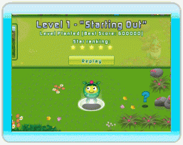

9 |
Pouvoir Étoile |
 |
|

Follie est tellement troublée par le style de l'environnement qui l'entoure qu'elle en a perdu confiance en elle-même. Le Pouvoir Étoile de Follie reflète cette confiance.
Lorsqu'un niveau est terminé, les Artifleurs épanouies ont un effet magique permanent sur leur environnement, transformant complètement son style. Chaque fois que cela se produit, Follie retrouve un peu de confiance en elle et doute un peu moins de pouvoir aller jusqu'au bout de son aventure. À chaque fois que vous terminez un niveau, vous recevez un classement sur 5 étoiles. Plus vous avez marqué de points durant le niveau, et plus ce classement est élevé. Chaque nouvelle étoile remportée vient augmenter le Pouvoir Étoile de Follie. Celui-ci est affiché en haut de l'écran lorsque vous explorez le monde. Lors de son aventure, Follie obtiendra régulièrement de nouveaux pouvoirs vous permettant d'obtenir de meilleurs scores, et donc de meilleurs classements dans les niveaux déjà terminés. Rejouez donc à un niveau autant de fois que vous le souhaitez, et tentez de décrocher un classement parfait de 5 étoiles ! |
 |
 |
 |